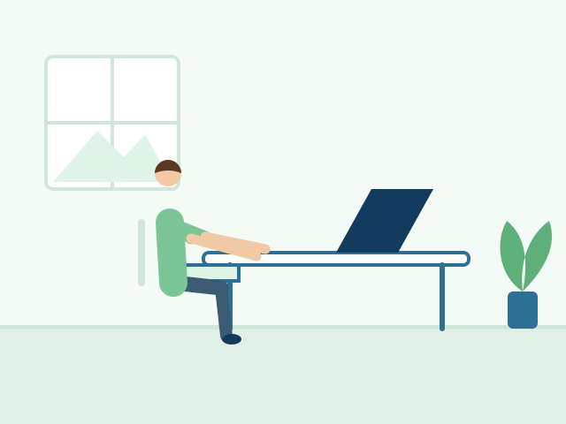

Desk posture basics for neck comfort

Changing position often matters more than finding one perfect posture. Keep your screen near eye level, support your lower back, and stand up to move regularly. Persistent neck pain deserves a proper assessment.
General information only. Author and clinical review: [Add author and reviewer]
Related articles
Staying active when you have back pain
Simple ways to reduce fall risk at home
Book an Appointment